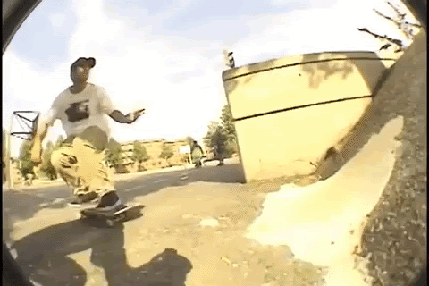
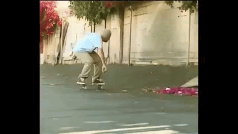

When weathered skaters tell tales of Uncle Freddy, we often speak of his appetite for excess,
his unexpected longevity, and his undeniable likability. Skate folklore yarns are spun of daring
rescues from burning buildings and wallride attempts on moving vehicles [links]. He is part
action hero, part comic relief, and all skateboarding legend.
It is near impossible to quantify the impact he has had on skateboarding lo these many years.
But once we look past the hedonism and the heroism, what we can quantify are the skate clips
themselves. What emerges from the data is a portrait of a cradle-to-grave skater who advanced
switch tech-gnar progre ssion on two coasts before becoming the archetype of an entire genre of
skating loosely defined as “crust”. So set down your bondo and crack a cold one if that’s your
thing… it’s time to crunch the numbers on Fred Fuckin’ Gall.
All The Gall
Nearly all the parts logged for this article, along with abstracts, biographical considerations, highly opinionated commentary, some observations from Fred himself, and lots of synonyms for “gnarly” can be found over in the series of All the Gall blog posts on the Warm Up Zone website. We also highly recommend the thorough Chrome Ball Incident interview with Freddy featuring dozens of accompanying photos. [Links]
Looking at the chart of Freddy’s top tricks over the entirety of his career, which can be toggled between specific
tricks or tricks grouped together by their dominant component, we aren’t confronted with many surprises. Ollies top
the list, be they over obstacle, on flat, or off some sort of launch, with over 50% of those being landed into some
sort of embankment. As we scroll down the list, we see all the familiar Freddy moves one would expect: Backside
wallrides, treflips, frontside 50s, switch frontside 180s, and backside 360s.

When we group similar tricks together, it is interesting to see some maneuvers rise in the rankings. When all
wallride variations are combined (and there were 22 unique variations of wallrides) it tops the list at 52
instances, a hefty 7% of his entire output. Also of note is that while Fred only recorded 5 straight up frontside
5-0 grinds; but when we total up all variations that include a frontside 5-0 component (such as the popular switch
frontside 180 to frontside 5-0), it is one of his more signature tricks.
Fred's Least Favorites
What you aren’t seeing in the chart above are the tricks that Freddy just didn’t do that often, or ever. And some of
those might surprise you.
We chatted with Freddy and mentioned some of these missing tricks.
- Smith Grinds - nearly 700 tricks and the only thing even resembling a smith grind is a
single smith
stall in a pool. Says Fred: “I had one smith grind ever in my entire life. It was a back smith down the Phoenix
Hubba and it was in a Habitat tour section of a video or something.”
We've searched and still haven't found it. We found it:
- Hardflips - Unless we’re talking nollie, there aren’t any to be found.
- FS Crooked Grinds - Not once. Ever. Says Fred: “I can’t do those to save my life.”
- Fakie flip tricks - when it comes to fakie flip tricks, Freddy just dabbled here and
there. Fakie
kickflips, fakie heelflips, and fakie 360flips only happened once each.
-
Switch 50-50s - Freddy’s switch 50-50 on a handrail at Philadelphia’s City Hall is somewhat legendary, but
we couldn’t find a photo or clip of it anywhere. Says Fred: “It's in Thrasher: On The Road. You will find that
there. I have kinda a little part in there.” Since that video isn’t part of our dataset, there are zero switch
50-50 grinds anywhere. None. Says Fred: “I really didn’t switch 50 unless it’s a rail.”
- Nollie kickflips - Nope.
- Pressure flips - Make no mistake; Those are inward heelflips. Says Fred: “Dude, no way
would I do a
pressure flip.”
OBSTACLES OVER TIME
A Tale of Two Freddys: When we line everything up chronologically by video parts a picture
quickly emerges of
two distinct phases of the career of Fred Gall with the birth of Habitat as a clear delineator between epochs. On
one side we have young Alien Fred: Featuring tricks in 14 videos through the first decade of his career, this starts
with the Tracker Brotherhood video from 1991 and continues through Photosynthesis in 2000 (and I’m including the 4
tricks in Danny Minnick’s 2001 Collage video in there too). On latter side we have old dirty Habitat Freddy skating
in 17 videos from Habitat’s Mosaic in 2003 through an online OJ Wheels part in 2015. The distinct features of the
transformation between eras would be the Transition to Transition and the Rise of Crust.
[gif of Freddy skating transition]
The Transition to Transition: It should come as no shock that as Fred Gall aged, a fetish for
the transitions
developed. In fact, if one disregards the tricks on the miniramp in Granny’s driveway and Bricktown Park during the
Tracker years (plus Philadelphia’s Afro Banks [link to photo]), Alien Fred almost exclusively skates surfaces with
hard angles. But from Mosaic onward over 27% of Freddy’s tricks are done on some type of transition. Fred’s most
recent part from 2015 featured 56% transition tricks.
The Evolution of Crust

A Note on Crust:
We thought it relevant to record if the trick is at a spot or obstacle that should be defined as “crust”.
Considerations towards “crustiness” can include roughness of ground, dilapidation of surrounding architecture,
presence of overgrown foliage, necessity of Bondo or Quikcrete, and overall shittyness of the obstacle. When we
reached out to Fred and asked him how he would define crust, he simply replied, “It’s like something that people
wouldn’t skate”.
The Rise of Crust: Nowadays, Freddy’s skating is synonymous with rugged, dilapidated, shit
obstacles. But it
wasn’t always so. When all the Gall is taken into account, we are only looking at crust about 25% of the time. If
this number seems low, that is almost entirely based on the fact Fred didn’t even start to taste crust until
Timecode, and even then it was just that crazy Philadelphia Underground rock thing [link to photo]. In fact, Alien
Fred’s videos only hit the crust with his tricks an average of 2.8% of the time. Contrast that to Habitat Freddy,
who crusted it up 34% of the time. And this trend continues crustwards, with a solid 50% crust in his six video
appearances since 2012, peaking out with harsh 82% of tricks qualifying as “on crust” in his most recent part for
OJs from 2015.
Some Video Numbers
The table above includes all the videos logged for this analysis along with a small sampling of the many, many
trends that can be tracked from the data. Some correlations remained consistent, such as the length of the video and
the number of lines included; Other observations, such as the strange spike in clips featuring one of both pant legs
cinched up, are just baffling on a bunch of levels.
While wallrides, a trick Freddy debuted with a monster kickflip to backside variation that landed him on the cover
of Transworld, took prominence in the middle portion of his career, flip tricks (in which we include all variations
including impossibles and shove-its) have remained surprisingly present even as his taste for transition has grown
over the years.

Video Breakdown
Percentage of ...
Another way to compare how Freddy’s output differs with each part is to compare the distribution of various metrics across them. Each block in the chart below is made up of one-hundred squares, each representing one percent. Click on the videos below to see the percentage of each metric in the selected video. Some observations we saw in this data:
- No SlowMo: For whatever reason Freddy’s skating is rarely presented in slow motion. In fact there are just 12 slow-mo tricks in his entire catalog. If you take Eastern Exposure 3 out of the mix, you’re watching Freddy at regular speed nearly 99% of the time. For comparison, 17% of Jim Greco’s career tricks have been in slow motion [link to Jenkem article].
- All Sides: When it comes to lips, ledges, or spinning rotation, Fred shows no favorites and only does things frontside 7.9% more often than backside. {If I am interpreting the fs and bs perc correctly}
- Manny-Busters: Fred Gall keeps all four wheels on the ground (or wall). There were only 3 wheelies total… all of nose variety. Something about foot down correlating to transition and ditch skating here, maybe.
- Switching It Up: Overall, Freddy attacked switch (or nollie) about 27% of the time. But this is heavily skewed towards the earlier part of his career. From Eastern Exposure 2 (1994) through Photosynthesis (2000), 47.5% of his tricks were started switch or nollie. This fell off a good deal for the latter portion of his career as post-Photosynthesis Habitat Freddy averages a 15.4% switch/nollie rate. (Note: this doesn’t include tricks that start in normal stance but are executed mostly switch (such as this fabulous backside 180 to switch backside 5-0 in SF [photo]).
Click around and see what other of Freddy’s secrets can be revealed with the power of data visualization.
SCATTER - SIMILAR PARTS
We can take the video parts expressed as percentages information and use that to create a scatter plot where each dot represents a different Fred Gall part. The parts are grouped together by similarity of *****. {Observations here once I see this plot}
Quick Facts
- 694 - Tricks logged for this article
- 185 - Tricks done on a ledge of some sort - that’s 26.7%
- 123 - Unique ledge tricks
- 82 - Total number of lines
- 76 - Tricks where Fred landed into some kind of embankment
- 68 - Sum of all blunts (slides, stalls, ledges, transition, nose, switch, and otherwise)
- 52 - Combined tricks on banked ledges and bank to ledges
- 35 - Unique variations of 5-0 grinds
- 30 - Number of tricks filmed at Love Park in the 1990s
- 26 - Slams (not including when Fred intentionally lands in water)

- 19 - 360flips, not including fakie, nollie, or switch
- 16 - 360flips as part of a line. Says Fred: “Yeah. The go-to trick.”
- 16 - Total tricks done on hubbas
- 15 - Tricks done with one or both pant legs cinched up
- 15 - Clips of Freddy breaking stuff (Includes blowing things up with explosives)
- 12 - Unique tricks done on hubbas
- 11 - Tricks filmed with that long, luxurious hair flowing. Says Fred: “I just did it randomly and then the filmers would be like ‘Yo. Do this one with your hair down. It’ll just look cool.’ So that’s how that works.” [leather vest photo]
- 8 (Or something like that) - number of beers drank before Wawa hoagies
- 5 - Switch kickflips (including this legendary one into a switch bs tailslide) [GIF]
- 4 - Nosebluntslides total - and only 1 was on transition
- 3 - Number of Black Sabbath songs. Says Fred: “I’m fully into that shit.”
- 3 - Tricks done on Hubba Hideout
- 2 - Times Fred is nearly hit by a car on camera
- 1 - Tricks at Burnside
- 1 - Nollie 360flips
- 0 - Number of tricks filmed at Love Park after the year 2000
- Hidden Gem: Pasado, Presente, Futuro - a 2009 video by frontside skateshop in Medellin, Colombia that features a full TIME Freddy part. LINK to WUZ article.
- Couldn’t find it on the internet: the footage of Fred attempting wallrides on a moving bus in Thailand [photo]
- Not part of this dataset but still pretty cool: Freddy bombs Bam’s driveway early in the morning [IG link]
- Don’t call it a comeback: Freddy is currently working hard on a new part (or two) that should be out later this year.
- Our favorite Freddy trick: This street spine blunt to bs 180 transfer to accidental grind. Says Fred: “That grind was a full accident. But I landed it and was like ‘yo, I just grinded’. Fuck it, we’ll use it anyway.” [gif]
- Freddy's favorite Freddy trick: “The tricks I did on the Hubba Hideout were really important. So I guess maybe the switch crook was my favorite.” [photo]
Thanks to Fred for the input. If you can point us to that bus-wallride or backside smith tour footage, we would appreciate it. Let us know what skater you would like to see analyzed next.
Data & Methodology
For this article we logged all of Freddy’s tricks from 31 different skate videos
totaling over 63 minutes of footage. The parts varied in length from three clips in Zoo York’s
Peep This to the five minute masterpiece of Inhabitants. Footage from several iPath tour videos,
Shorty’s DIY park features, instagram footage compilations, and Habitat Field Logs were not
included.
All efforts were made to remove identical clips that were featured in more than one video (for
example: Habitat’s Origins only had 3 tricks that weren’t already logged in Lowcard’s Worst
Skater of the Year part).
Freddy has had 3 retrospective parts. Of these, Eastern Exposure Zero and the secret part from
the Inhabitants DVD [links] were not included. Tricks from Thrasher’s 2013 Dirts Win
retrospective that were not featured elsewhere were added to the data.
The data for the analysis is available here. Code used for the
analysis is here.
Code for the charts here. For any questions
or comments to the author, reachout: @jdwilbr.